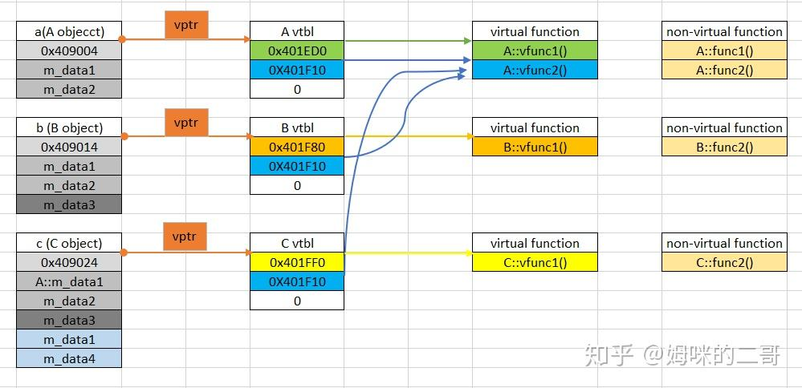
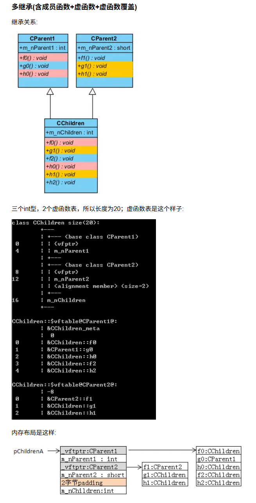
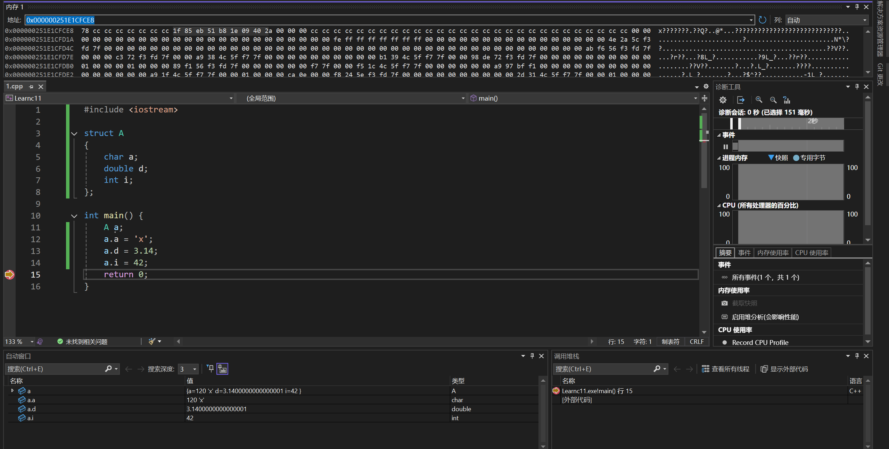

cpp八股1
cpp八股1
多态
什么是多态？C++中如何实现多态？
多态指的是同一个接口（在不同对象上）有着不同的行为。C++中多态分为编译时多态（静态多态）和运行时多态（动态多态）。
编译时动态顾名思义指的是在编译阶段就能决定哪个接口对应于哪个对象。
典型实现一：函数重载
注意返回值类型不参与重载判断
1 |
|
典型实现二：模板
1 |
|
运行时多态指的是接口的版本在运行阶段才能决定。通过继承和虚函数实现。
1 |
|
⭐虚函数的实现机制是什么？
虚函数通过虚函数表实现。虚函数表包含了一个类所有虚函数的地址，在有虚函数的类对象中，它内存空间的头部会有一个虚表指针vptr，用来管理虚函数表。
当子类对父类的虚函数进行重写（override）时，虚函数表响应的虚函数地址会发生改变。当我们用基类指针调用虚函数时，程序会通过vptr找到对应的虚函数表，从而调用正确的函数实现。

虚函数调用是在编译时确定还是运行时确定的？如何确定调用哪个函数？
通过指针或引用的方式，程序在运行时根据对象的实际类型来确定调用哪个函数，通过查找虚函数表来确定。
通过值的方式，编译器可以直接在编译时确定调用哪个函数。
虚函数是存在类中还是类对象中（即是否共享虚表）？
虚函数表是存在类中的，所有该类的对象共享同一个虚函数表。每个对象通过其vptr指针指向该类的虚函数表。这么做节省了内存空间。
⭐在(基类的)构造函数和析构函数中调用虚函数会怎么样？
这一点在Effective C++中的条款9：绝不在构造和析构过程中调用virtual函数中有对应。
语法上来看，没有任何问题，但是从效果上来看，往往不会达到预期效果。对于构造函数来说，derived class对象内的base class成分会在derived class的构造函数执行前就被构造完成，因此在base class的构造函数中调用虚函数时，实际上调用的是base class版本的虚函数，而不是derived class版本。Effective C++中有一种说法：在base class构造期间，virtual函数不是virtual函数。
同理，调用析构函数的时候，先对子类的成分进行析构，当进入父类的析构函数的时候，子类的特有成分已经销毁，此时是无法再调用虚函数实现多态的。
C语言可以实现虚函数机制吗，如何实现？
邪门。
可以，需要手动构造父子关系、创建虚函数表、设置虚表指针并指向虚函数表、填充虚函数表；当虚函数重写的时候还需要手动修改函数指针等等。
内存模型，继承问题
C++中类对象的内存模型（布局）是怎样的？
- 如果有虚函数的话，虚函数表的指针始终存放在内存空间的头部。这个是为了方便通过对象指针快速找到虚函数表。
- 除了虚函数表指针之外，内存空间会按照类的继承顺序（父类到子类）以及字段的声明顺序布局。
- 如果有多继承，每个包含虚函数的父类都会有自己的虚函数表，并且按照继承顺序布局（虚表指针+字段）；如果子类重写父类虚函数，都会在每一个相应的虚函数表中更新相应地址；如果子类有自己的新定义的虚函数或者非虚成员函数，也会加到第一个虚函数表的后面：

- TODO：钻石继承（没用过）
⭐钻石(菱形)继承存在什么问题，如何解决？
TODO
内存管理（内存分配、内存对齐）
C++是如何做内存管理的（有哪些内存区域）？
- 堆，由
malloc、free动态分配和释放空间，能分配较大的内存。 - 栈，为函数的局部变量分配内存，函数执行结束后自动释放。分配内存较小，但是分配效率高。
- 全局/静态存储区，全局变量和静态变量一起存放在这里，程序结束时释放。
- 常量存储区，这是一块比较特殊的存储区，他们里面存放的是常量，不允许修改。
- 自由存储区，C++的抽象概念，通过
new和delete分配和释放空间的内存。
gpt:
const的全局变量或静态变量都具备静态存储期，具体落在只读段还是可写静态段是实现细节，主流编译器会把只读的静态/全局const放在只读数据段。
从技术上来说，堆是C语言和操作系统的术语。堆是操作系统所维护的一块特殊内存，它提供了动态分配的功能，当运行程序调用 malloc() 时就会从中分配，稍后调用 free 可把内存交还。而自由存储是C++中通过 new 和 delete 动态分配和释放对象的抽象概念，通过 new 来申请的内存区域可称为自由存储区。基本上，所有的C++编译器默认使用堆来实现自由存储，也即是缺省的全局运算符new 和 delete 也许会按照 malloc 和 free 的方式来被实现，这时藉由 new 运算符分配的对象，说它在堆上也对，说它在自由存储区上也正确。
但程序员也可以通过重载操作符，改用其他内存来实现自由存储，例如全局变量做的对象池，这时自由存储区就区别于堆了。.
堆和栈的内存有什么区别
- 堆中的内存需要手动申请和手动释放，栈的内存则由OS自动申请和释放。
- 堆能分配的内存较大，栈的内存较小。
- 堆分配的内存会产生内存碎片，栈不会。
- 堆的分配效率较低，栈的分配效率较高。
- 堆地址从低地址向高地址增长，栈地址从高地址向低地址增长。
C++和C分别使用什么函数来做内存的分配和释放？有什么区别，能否混用？
C使用malloc/free，C++使用new/delete，前者是C语言的库函数，后者是C++的运算符。
对于自定义的对象，malloc/free只会分配和释放内存，无法调用构造函数和析构函数，而new/delete可以做到，完成对象的空间分配和初始化（调用构造函数），以及对象的销毁（调用析构函数）和内存释放。因此二者不能混用。
具体区别如下：
new分配内存空间无需指定大小，malloc需要。new返回类型指针，类型安全，malloc返回void*，需要强制类型转换。new从自由存储区分配内存，malloc从堆分配内存。- 对于类对象，
new会调用构造和析构函数，malloc不会。
什么是内存对齐(字节对齐)，为什么要做内存对齐，如何对齐？
内存对齐指的是C++结构体中的数据成员，其内存地址是否为其对齐字节大小的整数倍。为了提高效率，计算机从内存中取数据是按照一个固定长度的。比如在32位机上，CPU每次都是取32bit数据的，也就是4字节；若不进行对齐，要取出两块地址中的数据，进行掩码和移位等操作，写入目标寄存器内存，效率很低。内存对齐一方面可以节省内存，一方面可以提升数据读取的速度。
对齐原则： 1. 结构体变量的首地址能够被其最宽基本类型成员的对齐值所整除。 2. 结构体内每一个成员的相对于起始地址的偏移量能够被该变量的大小整除。 3. 结构体的总大小必须是其最宽基本类型成员大小的整数倍。
针对原则1： 1
2
3
4
5
6
7
8
9
10
11
12
13
14
15
16
struct A
{
char a;
double d;
int i;
};
int main() {
A a;
a.a = 'x';
a.d = 3.14;
a.i = 42;
return 0;
}
使用x64环境，使用VS的内存查看工具，可以看到结构体 a 的地址为 0x000000251E1CFCE8，而结构体内最宽成员 double d 的对齐值为8，地址 0x000000251E1CFCE8 能够被8整除，符合原则1。

针对原则2： 1
2
3
4
5
6
7
8
9
10
11
12
13
struct B {
char a; // 对齐 1
int b; // 对齐 4，需要把偏移调到 4 的倍数
short c; // 对齐 2
};
int main() {
std::cout << "offsetof a=" << offsetof(B, a) << "\n"; // 0
std::cout << "offsetof b=" << offsetof(B, b) << "\n"; // 4，前面插入 3 字节填充
std::cout << "offsetof c=" << offsetof(B, c) << "\n"; // 8，因 b 占 4 + 填充
std::cout << "sizeof(B)=" << sizeof(B) << "\n"; // 12
}
针对原则3，上面结构体 B 中最宽成员 int b 的大小为4，结构体总大小12能够被4整除，符合原则3。
声明数据结构时，字节对齐的数据依次声明，然后小成员组合在一起，能省去一些浪费的空间，不要把小成员参杂声明在字节对齐的数据之间。
类型转换
⭐C++有哪些类型转换的方法(关键字)，各自有什么作用？
const_cast：将const属性去掉（也可以反过来）。只能用于指针或引用，且更改的是对象底层的const属性。
提一嘴，一般用这个转型都是糟糕的想法，但是在Effective C++的条款3中介绍了一个合法的特例，它主要是为了在 const 和 non-const 成员函数中避免重复。
1 | class TextBlock { |
注意是 non-const 成员函数调用 const 版本，不能反过来。
static_cast：强制隐式转换，例如将non-const转为const，将子类指针转换为父类指针（向上转型），将基本数据类型转换为其他基本数据类型等。不能用于去掉const属性。dynamic_cast：主要用于有继承关系的类之间的指针或引用转换，通常用于将父类指针转换为子类指针（向下转型）。如果转换失败，指针返回nullptr，引用抛出异常。需要有虚函数支持运行时类型识别（RTTI），否则编译不通过。reinterpret_cast：将数据的二进制形式进行重新解释。用于不同类型之间的低级别转换，例如将指针转换为整数类型，或将一个类的指针转换为另一个不相关类的指针。通常不安全，容易导致未定义行为，应谨慎使用。
static_cast和dynamic_cast的异同点？
二者都会做类型检查，static_cast 在编译时进行类型检查，而 dynamic_cast 在运行时进行类型检查，且需要父类具备虚函数。
dynamic_cast的原理，如何自行实现？
编译器会为每个包含虚函数的类生成一个 RTTI（运行时类型信息）结构，包含类的类型信息和继承关系。当使用 dynamic_cast 时，程序会检查对象的实际类型是否与目标类型兼容，如果兼容则返回转换后的指针或引用，否则返回 nullptr 或抛出异常。
自行简易实现如下： 1
2
3
4
5
6
7
8
9
10
11
12
13
14
15
16
17
18
19
20
21
22
23
24
25
26
27
28
29
30
31
32
33
34
35
36
37
38
39
40
41
42
43
44
45
46
47
48
49
50
51
52
53
54
55
56
57
58
59
60
61
62
63
64
65
66
67
68
69
70
71
72
73
74
75
76
77
78
79
80
81
82
83
84
85
86
87
88
89
90
91
92
93
94
95
96
97
98
99
100
101
102
103
104
105
106
107
108
109
110
111
112
113
114
115
116
117
118
119
120
121
122
123
124
125
126
127
128
129
130
131
132
133
134
135
136
137
138
139
140
141
142
143
144
145
146
147
148
149
150
151
struct TypeInfo
{
const char* name;
const TypeInfo* const* parents;
size_t parentCount;
bool isA(const TypeInfo& target) const
{
if (this == &target)
return true;
for (size_t i = 0; i < parentCount; ++i)
{
if (parents[i]->isA(target))
return true;
}
return false;
}
};
// 声明TypeInfo相关函数的宏
// 定义基类的TypeInfo
// 定义派生类的TypeInfo
struct Object
{
virtual ~Object() = default;
virtual const TypeInfo& type_info() const = 0;
bool isA(const TypeInfo& target) const
{
return type_info().isA(target);
}
};
struct Animal : public Object
{
DECLARE_TYPEINFO()
};
DEFINE_ROOT_TYPEINFO(Animal)
struct Mammal : public Animal
{
DECLARE_TYPEINFO()
};
DEFINE_TYPEINFO(Mammal, &Animal::static_type())
struct Bird : public Animal
{
DECLARE_TYPEINFO()
};
DEFINE_TYPEINFO(Bird, &Animal::static_type())
struct Dog : public Mammal
{
DECLARE_TYPEINFO()
std::string bark() const { return "woof"; }
};
DEFINE_TYPEINFO(Dog, &Mammal::static_type())
struct Cat : public Mammal
{
DECLARE_TYPEINFO()
std::string meow() const { return "meow"; }
};
DEFINE_TYPEINFO(Cat, &Mammal::static_type())
struct Sparrow : public Bird
{
DECLARE_TYPEINFO()
std::string chirp() const { return "chirp"; }
};
DEFINE_TYPEINFO(Sparrow, &Bird::static_type())
// Base dynamic_cast to T
template<typename T, typename Base>
T* Dynamic_cast(Base* p)
{
if(!p) return nullptr;
if(p->isA(T::static_type()))
return static_cast<T*>(p);
return nullptr;
}
int main()
{
Animal* a1 = new Dog();
Animal* a2 = new Sparrow();
if(Dog* dog = Dynamic_cast<Dog>(a1))
{
std::cout << "Dog says: " << dog->bark() << std::endl;
}
else
{
std::cout << "a1 is not a Dog." << std::endl;
}
if(Mammal* mammal = Dynamic_cast<Mammal>(a1))
{
std::cout << "a1 is a Mammal." << std::endl;
}
else
{
std::cout << "a1 is not a Mammal." << std::endl;
}
if(Bird* bird = Dynamic_cast<Bird>(a2))
{
std::cout << "a2 is a Bird." << std::endl;
}
else
{
std::cout << "a2 is not a Bird." << std::endl;
}
if(Mammal* mammal = Dynamic_cast<Mammal>(a2))
{
std::cout << "a2 is a Mammal." << std::endl;
}
else
{
std::cout << "a2 is not a Mammal." << std::endl;
}
return 0;
}
智能指针
⭐C++中智能指针有哪些，各自有什么作用？
智能指针主要解决的是内存泄露的问题，它可以在合适的时候自动释放内存。智能指针本身是一个类，通过析构函数释放空间。常用智能指针如下： 1. std::shared_ptr：多个共享指针可以指向相同的对象，采用了引用计数的机制，当最后一个引用销毁时，释放内存空间。 2. std::unique_ptr：保证同一时间段只有一个智能指针指向该对象，可通过 std::move 转移所有权，不能被复制。 1
2
3
4
5
6
7
8
9
10
11
12
13
14
15
16
17
18
19
20
21
22
23
24
25
26
struct Node
{
Node(int _x): x(_x) { std::cout << "Node created with value " << x << "\n"; }
~Node() { std::cout << "Node destroyed with value " << x << "\n"; }
int x;
};
int main() {
std::unique_ptr<Node> p = std::make_unique<Node>(42);
std::unique_ptr<Node> q = std::move(p);
if(q && !p) {
std::cout << "Ownership transferred successfully. Node value: " << q->x << "\n";
} else {
std::cout << "Ownership transfer failed.\n";
}
return 0;
}
/*
Output:
Node created with value 42
Ownership transferred successfully. Node value: 42
Node destroyed with value 42
*/std::weak_ptr：与 shared_ptr 配合使用，解决循环引用的问题。它不会增加引用计数，可以通过 lock() 方法获取一个 shared_ptr。 1
2
3
4
5
6
7
8
9
10
11
12
13
14
15
16
17
18
19
20
21
22
23
24
25
26
27
28
29
30
31
32
33
34
35
36
37
38
39
40
struct Node
{
std::shared_ptr<Node> child;
std::weak_ptr<Node> parent;
std::string name;
Node(const std::string& n) : name(n) {std::cout << "Node " << name << " created.\n"; }
~Node() {std::cout << "Node " << name << " destroyed.\n"; }
};
int main() {
std::shared_ptr<Node> parent = std::make_shared<Node>("Parent");
std::shared_ptr<Node> child = std::make_shared<Node>("Child");
parent->child = child;
child->parent = parent;
if(child->parent.lock()) {
std::cout << "Child's parent is: " << child->parent.lock()->name << "\n";
} else {
std::cout << "Child's parent has been destroyed.\n";
}
parent.reset();
if(child->parent.lock()) {
std::cout << "Child's parent is: " << child->parent.lock()->name << "\n";
} else {
std::cout << "Child's parent has been destroyed.\n";
}
return 0;
}
/*
Output:
Node Parent created.
Node Child created.
Child's parent is: Parent
Node Parent destroyed.
Child's parent has been destroyed.
Node Child destroyed.
*/
核心机制是引用计数，计数为0时会自动销毁这个对象。
具体实现： 1
2
3
4
5
6
7
8
9
10
11
12
13
14
15
16
17
18
19
20
21
22
23
24
25
26
27
28
29
30
31
32
33
34
35
36
37
38
39
40
41
42
43
44
45
46
47
48
49
50
51
52
53
54
55
56
57
58
59
60
61
62
63
64
65
66
67
68
69
70
71
72
73
74
75
76
77// Tip: 标准实现对于计数是线程安全的，但是对于对象的管理不是
template<typename T>
class SharedPtr
{
public:
explicit SharedPtr(T* p = nullptr)
: ptr(p)
{
if(p)
{
refCount = new int(1);
}
else
{
refCount = nullptr;
}
}
SharedPtr(const SharedPtr<T>& sp)
: ptr(sp.ptr), refCount(sp.refCount)
{
if(refCount)
{
++(*refCount);
}
}
SharedPtr<T>& operator=(const SharedPtr<T>& sp)
{
if(this == &sp) return *this;
release();
ptr = sp.ptr;
refCount = sp.refCount;
if(refCount)
{
++(*refCount);
}
}
~SharedPtr()
{
release();
}
T* operator->() const
{
return ptr;
}
T& operator*() const
{
return *ptr;
}
int use_count() const
{
return refCount ? *refCount : 0;
}
private:
T* ptr;
int* refCount;
void release()
{
if(refCount)
{
--(*refCount);
if(*refCount == 0)
{
delete ptr;
delete refCount;
}
}
}
};
std::shared_ptr 引用计数本身是安全无锁的，但是它所指向的对象不是线程安全的。如果多个线程同时访问同一个 shared_ptr 指向的对象，可能会导致数据竞争和未定义行为。因此，在多线程环境下使用 shared_ptr 时，需要确保对共享对象的访问是同步的。
weak_ptr是为了解决shared_ptr的循环引用问题，那为什么不用raw pointer来解决呢？
std::weak_ptr 绑定到一个 std::shared_ptr 不会添加计数，且 std::shared_ptr 计数为0时，对象会被销毁。相比于 raw pointer, std::weak_ptr 可以通过 lock() 方法安全地获取一个 std::shared_ptr，从而避免悬空指针的问题。
关键字
⭐const的作用？指针常量和常量指针？const修饰的函数能否重载？
const 修饰符用来定义常量，具有不可变性。在类中，被 const 修饰的成员函数表示该函数不会修改对象的状态。
指针常量是指针本身是一个常量，不能改变指向的地址，但可以通过指针修改所指向的值。例如：
1 | int value1 = 10; |
在C++中指针常量的定义方式是将 const 放在 * 之后。
常量指针是指针指向的值是常量，不能通过指针修改所指向的值，但可以改变指针本身的地址。例如：
1 | int value1 = 10; |
在C++中常量指针的定义方式是将 const 放在 * 之前。
const 修饰的成员函数可以重载。这类函数无法调用非 const 成员函数，因为 const 成员函数承诺不会修改对象状态，而非 const 成员函数可能会修改对象状态。而非 const 的对象无论是否 const 成员函数都可以调用，但是如果有重载的非 const 和 const 成员函数，编译器会优先选择非 const 版本。
⭐static的作用？static变量什么时候初始化？
static 是静态的意思，可以对变量和函数进行修饰。分以下情况： 1. 当用于文件作用域（.h或.cpp文件中直接修饰函数或变量），static 表示该函数或变量的作用域仅限于当前文件，防止命名冲突、重定义。 2. 当用于函数作用域（作为局部静态变量），static 意味着这个变量是全局的，只会在第一次调用时初始化一次，之后的调用不会重新初始化，且变量的生命周期贯穿程序运行期间。 3. 用于类的声明时，静态数据成员和静态成员函数，static 表示这些数据和函数是所有类共享的一种属性，而非每个对象独有的。静态成员函数只能访问静态数据成员。 4. static 变量在类的声明中不占内存，因此必须在cpp文件中定义类静态变量来分配内存。
文件域的静态变量和类的静态成员变量在main执行之前的静态初始化过程中分配内存并初始化；局部静态变量在第一次使用时分配内存并初始化。
extern的作用？
和 “C” 一起连用，例如 extern "C" void fun(int a, int b); 表示告诉编译器按照C语言的方式来处理函数 fun 的名字修饰和调用约定，防止C++的名字修饰导致链接错误。
当它作为一个对函数或者全局变量的外部声明，提示编译器遇到此变量或函数时，在其它模块中寻找其定义。
explicit的作用？
表明一个类的构造函数是显式的，防止隐式类型转换。只有在直接使用该构造函数时才能调用，不能通过赋值或其他隐式转换方式调用。
constexpr的作用？
这个关键字明确告诉编译器应该去验证（函数或变量）在编译期就可以求值，从而在编译期进行计算和优化。
volatile的作用？
跟编译器优化有关，告诉编译器该变量可能会被程序外部的因素修改（例如硬件寄存器、其他线程等），因此每次访问该变量时都必须从内存中读取，而不能使用寄存器缓存的值，防止编译器对其进行优化。
mutable的作用？
可变的意思，允许在 const 成员函数中修改该成员变量。通常用于缓存等场景，即使对象是 const 的，也允许修改该成员变量。
auto和decltype的作用和区别？
二者都用于实现类型自动推导，让编译器推导变量类型；auto 不能用于函数传参和推导数组类型，但 decltype 可以。 1
2
3
4
5
6
7
8
9
10
11
12
13
14
15
16
17// ===== 关键区别对比 =====
// 1. 表达式推导
int arr[5] = {1, 2, 3, 4, 5};
// auto arr2 = arr; // 编译错误auto 不能推导数组类型
decltype(arr) arr2 = arr; // 可以arr2 是 int[5]
// 2. 函数返回值推导
auto func1 = [](int x) { return x *2; }; // auto 可以推导 lambda
// decltype(func1) func2; // 编译错误decltype 需要表达式
// 3. 复杂表达式
auto sum = a + b; // sum 推为 int
decltype(a + b) sum2 = a + b; // sum2推导为 int（同上）
// 4. 函数指针
auto func_ptr = &printf; // 可以推导函指针
decltype(&printf) func_ptr2 = &printf; // 也可以
左值右值
⭐什么是左值和右值，什么是右值引用，为什么要引入右值引用？
左值是可寻址的具有持久状态的存储单元，直到离开作用域后才销毁。可以绑定到 T& 和 const T&。右值表示的即将销毁的无持久身份的临时对象。通常只能绑定到 const T& 和 T&&。
右值引用用来绑定右值，通过 T&& 声明。
引入右值引用的主要目的是实现移动语义，允许资源从一个对象“移动”到另一个对象，而不是进行昂贵的拷贝操作，从而提升性能。使用 std::move 可以将左值（Tip：是非 const 的左值？）转换为右值引用，从而启用移动语义。
右值引用和
const T&都能延长临时对象的生命周期，这时候可以对右值进行取地址。不能对未绑定的纯右值直接取地址。
为什么要自己定义拷贝构造函数？什么是深拷贝和浅拷贝？
默认的拷贝构造函数是浅拷贝，对于有指针的类对象，浅拷贝只会复制指针的值（地址），而不会复制指针所指向的内容。这样会导致多个对象共享同一块内存，当其中一个对象被销毁时，其他对象的指针就变成悬空指针，可能引发未定义行为。
深拷贝则会为每个对象分配独立的内存空间，复制指针所指向的内容，确保每个对象都有自己的资源，避免悬空指针的问题。
什么是移动构造函数，和拷贝构造函数的区别？
移动构造函数需要传递的参数是一个右值引用，移动构造函数不分配新内存，而是接管传递而来对象的内存，并在移动之后把源对象销毁；拷贝构造函数需要传递一个左值引用，可能会造成重新分配内存，性能更低。
内联函数与宏
⭐内联函数有什么作用？有什么缺点？
内联函数就是在调用处展开函数体，避免了函数调用的开销，提高了性能。适用于短小频繁调用的函数。
缺点是会造成代码膨胀，增加可执行文件的大小，可能导致缓存效率降低；调试时不方便，因为没有函数调用栈信息。
内联函数和宏有什么区别，有了宏为什么还需要内联函数？
宏命令在预处理阶段进行文本替换，没有类型检查，容易引发错误；内联函数在编译阶段进行类型检查，更安全可靠。例如对于一个 max 命令，但是传递了一个字符串和整数。
杂项
C++11的新特性？
auto关键字用于类型推导。nullptr代替NULL，这可以避免重载时出现的问题（整数和void *）。- 智能指针。
- 右值引用，基于右值引用可以实现移动语义和完美转发，消除两个对象交互时不必要的对象拷贝，节省运算存储资源，提高效率。
- lambda表达式，一个匿名函数对象，简化代码。
- 范围for循环，简化对容器的遍历。
指针和引用的区别？
- 指针本质是一个地址，有自己的存储空间，引用只是一个别名。
- 指针可以指向其它对象，引用一旦绑定就不能改变。
- 指针可以为
nullptr，引用必须绑定一个合法对象。 - 指针可以是多级指针，引用不支持多级引用。
重载、重写和隐藏的区别？
- 重载指的是同一个名字的函数，具有不同的参数列表（参数类型、个数），根据参数列表决定调用哪一个函数。
- 重写指子类的函数重写父类的虚函数，必须具有相同的函数签名（名称、参数列表、返回类型），通过基类指针或引用调用时，根据对象的实际类型决定调用哪个版本。
- 隐藏是指，派生类中的同名函数把基类中的同名函数隐藏了，即基类同名函数被屏蔽掉；此时基类函数不能声明为
virtual。
delete和delete[]的区别？delete[]如何知道要delete多少次，在类的成员函数中能否delete this？
对于基本类型，delete 和 delete[] 的效果是一样的；但是对于类对象，delete 只会调用一个对象的析构函数，而 delete[] 会调用数组中每个对象的析构函数。
因为 new[] 会在分配的内存前面存储数组的大小信息，所以 delete[] 能够知道要调用多少次析构函数。
在类的成员函数可以调用 delete this ，并且delete this 之后还可以调用该对象的其他成员，但是有个前提：被调用的方法不涉及这个对象的数据成员和虚函数。当一个类对象声明时，系统会为其分配内存空间。在类对象的内存空间中，只有数据成员和虚函数表指针，并不包含代码内容，类的成员函数单独放在代码段中。